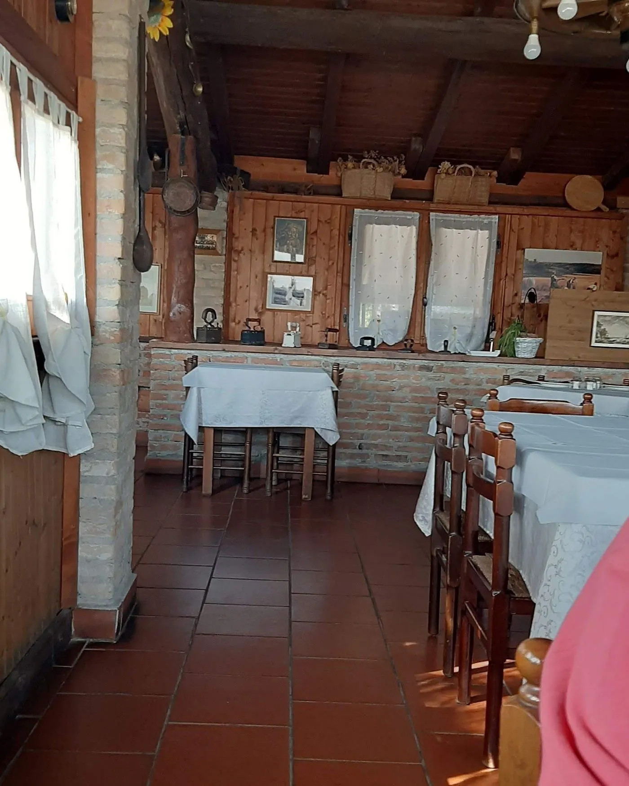
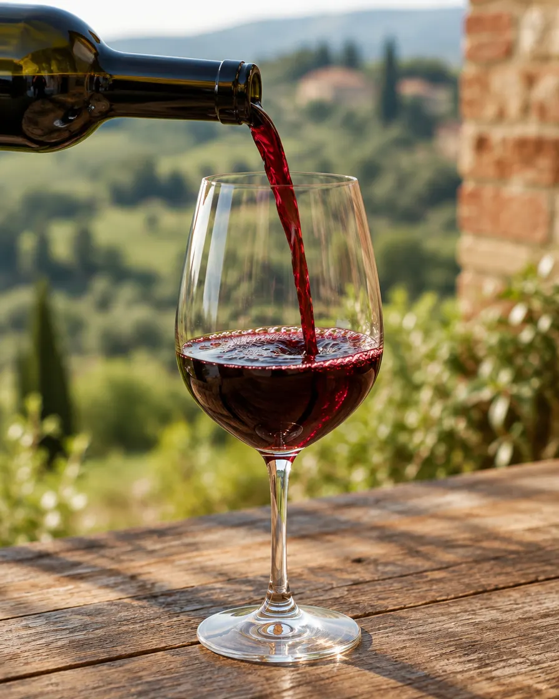
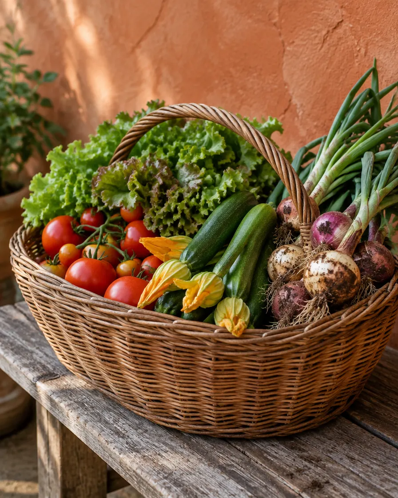

Azienda agricola biologicaStrada Scortica 15 · VogheraSi mangia su prenotazione
La cucina, senza menu stampato.
Alla Scortia si mangia quello che c’è: quello che dà la stagione e quello che abbiamo preparato per chi ha prenotato. Per questo qui non trovi un elenco di piatti con i prezzi, ma un numero di telefono.

Si cucina per chi ha chiamato.
Piatti semplici e abbondanti, come si mangia in cascina. Dicci quanti siete, se ci sono bambini, allergie o cose che non mangiate: il pranzo lo costruiamo intorno a voi.

Il vino è il nostro.
Siamo un’azienda agricola prima che un ristorante: in tavola arriva il vino di nostra produzione. Chi è stato da noi lo ricorda nelle recensioni.

Un’azienda biologica.
La Scortia è un’azienda agricola biologica, oltre che un agriturismo. All’ingresso c’è la targa degli agriturismi della Lombardia.
Prima di chiamare
Come si prenota all’Agriturismo La Scortia?
Con una telefonata allo 0383 364971. Si mangia su prenotazione: chiamaci prima di partire, così ti diciamo quando siamo aperti e cosa cuciniamo.
Quando siete aperti?
Non abbiamo orari fissi pubblicati: cuciniamo per chi prenota. Per sapere i giorni di apertura chiama lo 0383 364971.
Si possono organizzare pranzi di gruppo e feste?
Sì. La sala è adatta a compleanni, battesimi e tavolate, e fuori c’è la corte. Per i gruppi conviene chiamare con qualche giorno di anticipo.
Siete un’azienda biologica?
Sì: La Scortia è un’azienda agricola biologica, oltre che un agriturismo.